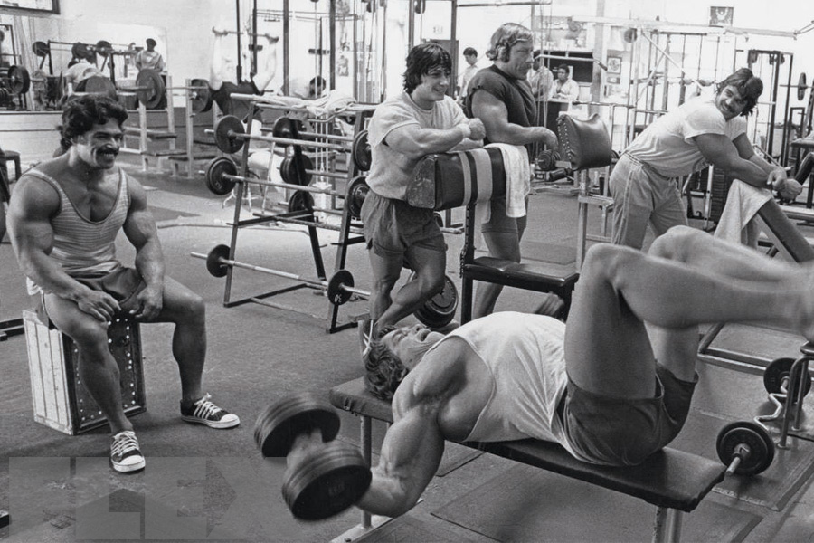

My New December Day Resolutions
Why am I starting my New Year's resolutions a month early?
We all know the drill. Christmas has finished, we have a week left before the start of a new year, and so now we can spend the next week preparing ourselves to build our better self come January. Swathes of people get on board, share content related to the topic, tips, advice, and we are able to ride this momentum together as we take new plunges into unfamiliar or uncharted territory.
Starting all of this in December is helpful mainly for two reasons:
The first is that because I already always sort of have this nagging feeling in the back of my mind to start new goals, and try to build new habits, I don't really think I need the extra push you get at the start of January when everyone else is starting. Starting in December allows me to get the ball rolling with a whole smörgåsbord of new tasks, habits, and goals, and then just when the ball starts to roll to its first stop, I can indulge in the same content I would have otherwise consumed, and use that to help carry me through another month. In my experience, I need about two months of consistency to get a habit to stick. I need help with the second month, not the first.
Second, starting in December allows me to put myself through my first proper test period. My first trial with temptation so to speak. With Christmas at the end of the month, I have about three weeks to start implementing my habits, and then almost right away, in the month when my motivation is at its highest, I am able to put my diligence to the test by carrying through with these new habits through the Christmas season. There are similar sorts of hiccup holidays throughout the year, things that will slow us down, but most don't come until a few months into the new year, and by that point, motivation and momentum will be at an all time low. Starting things out just shortly before a big holiday will give me the tools I need to evaluate how I deal with distraction and obstacles at a time when I will likely be most equipped to deal with those sorts of hurdles.
What are my goals?
My goals this year will sort of follow the same structure as they have most years. That is, namely, I will be focusing on developping myself physically, academically, and creatively.
Physically
In terms of building habits, there is not a lot to do in the realm of physical development. I think that working out is and has been my longest established, longest running consistent habit. I will continue to go to the gym six days a week, but in the new year, I think I'd like to try putting on more size. I've hovered around the same weight for the past three or four years, and so for the remainder of winter and the beginning of spring, I am going to focus on eating more, and trying to put on as much size as possible. At a minimum, I'd like to finally break 80 kgs by April. 82 kg would be an amazing extended bonus. Last year I was able to make gains on my back after having that body part lag considerably since the start of my bodybuilding career. Continuing with my efforts there, and also giving some attention to my long neglected lower body will hopefully help in getting that number on the scale up!
Academically
Academically, the main focus will naturally with language study. I've worked hard these past two years on Korean, dedicating virtually all of my study-energy to that project, but I've really missed the dabbling and sampling I had enjoyed for most of my language-loving life, and feel about ready to indulge a bit in that again.
Before that though, just to cover my bases, Japanese study will continue as it has been–that is, in maintenance mode. What I was able to accomplish with Japanese over the past five years is probably one of the proudest achievements in my life, and I fully intend on continuing with it as much as I can. Listening is a very comfortable activity for me, and so integrating a podcast into my commute at least twice a week feels like a realistic standard to hold myself to. I'd also like to read at least one book in Japanese by the end April.
Korean is obviously the language I come into contact with the most. Over the past two years, I've been slaving over Anki on the daily, and have finally widdled my daily card review number from the 700s and 600s to a manageable 50 or 60 a day. The number continues to drop, and as it does, I have been starting another deck, one for sentences. I have at least one day at work a week that is almost entirely free, and so I'd like to dedicate at least an hour of that time deskwarming to sentence mining from Korean YouTube videos (which has become my prefered media to consume. Still have not been able to get really into k-dramas...). Doing that every week should help the deck to grow considerably, and the added immersion I think will help a lot with navigating topics I'm genuinely interested in, rather than just the same sort of classroom Korean I use and hear on the daily.
What remains is the fun part. For the new year, I primarily have two new languages in mind. One which I briefly dipped my toes into in 2019, and another with which I have basically no experience at all. The first language is Mandarin Chinese. Already having studied kanji, I have this strange experience looking at a Chinese sentence written down, and feeling all kinds of familiarity, but not quite knowing enough to properly penetrate its meaning. Also having lived in Japan and Korea, I've met a fair number of people from China, Hong Kong, and Taiwan, and I think it might be fun to be engage in conversation in Mandarin with them when the opportunity presents itself. Also, I've long been interested in learning Cantonese as well, but it seems the most effective way to do this is often by using materials written for Mandarin speakers. Having a bit of Mandarin under my belt would make approaching this other goal in the future a lot more tenible.
The more unexpected language on the list is Hungarian! When I first began "collecting" languages in high school, I was attracted by the idea of studying one language per language group in Europe to cover my bases as widely as possible. I chose French for my foreign Romance language, Polish for Slavic, and Norwegian for Germanic. And while Finnish was entirely unrelated, it was always my intention to pick up Finnish one day as my Uralic language. But in recent years, seeing my good friend Lindie take up Hungarian, it seems as if the universe has been attuning my eyes and ears to the language. I've become more and more attracted to its sounds, I feel like I see Hungarian names and topics popping up more and more when I am going down writerly rabbit holes. Lately, I just feel I've been sufficiently charmed by the language to warrant indulging in learning it, if not with total seriousness, for a bit of fun and variety.
And so with both of these languages, I'm thinking to start, I'm going to give studying with Duolingo a shot. My excuse for avoiding apps to study in the past has been that they never feel rigorous enough for me, and also I very often tend to like starting completely independently and design my own introduction to a language. But knowing so little of both of these languages, I'm starting with a fairly blank slate. I think this would be a good opportunity to just have a bit of fun, and make a daily habit of doing at least one of the two on Duolingo and seeing where it takes me in the preliminary stage of learning these languages. Giving myself no pressure, and telling myself to just have some fun with them.
Creatively
Finally, my last category was improving on creative output. This has been the area of my life that I've let sort of slide the most considerably over the past few years. At the beginning of last year, I did a good job about filling at least one page in my sketchbook every month, but fell off in September. I'd like to give that another go in the new year, starting this month in December. More significant though is the amount of leeway I've been giving myself in terms of writing. I have had a large research and reading intensive project on the backburner since my college days, but I've consistently let myself be bogged down by the ideation portion of the project instead of actually sitting down and writing. I think my philosophy going forward is to allow myself to engage in reading and research on weekdays, likely when I am having downtime at work, and to then only entertain writing on the weekends. Going forward I aim to write for at least an hour, once a weekend. I feel like this should be totally doable, and hopefully restricting myself in this way will get me out of my slump. Anything I will want to reference should be jotted down in a word file during the week. No more PDFs or open books once I have actually sat down to write. They always manage to to tear me away from the projet at hand.